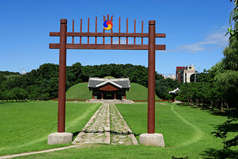

조선왕릉은 그 격에 따라서 크게 세 가지로 구분할 수 있다. 능(陵): 왕, 왕비, 그리고 추존왕과 추존왕비, 황제와 황후의 무덤. 조선왕조실록에 기록된 왕릉은 총 50기(이성계가 추존한, 이성계의 선조를 모신 8기의 능 포함)이며, 그 중에 40기의 능이 남한에 위치하고 있다. 나머지 10기의 능(제릉, 후릉 및 함길도(함경도) 8릉)은 북한 개성에 위치한다. 원(園): 왕세자, 왕세자빈 또는 임금의 사친(私親)[10]의 묘소에 붙이는 이름이다. 총 12기. 묘(墓): 나머지 왕족(대군, 군, 공주, 옹주, 후궁)과 폐위된 왕과 왕비의 무덤.